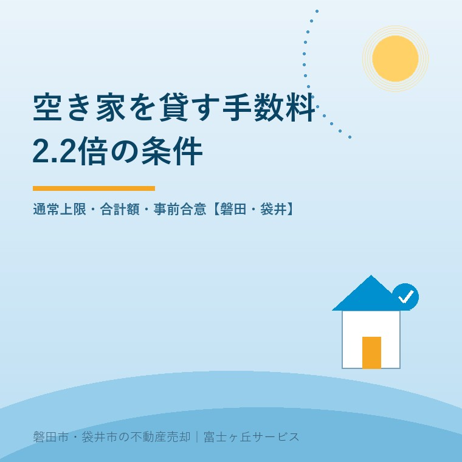
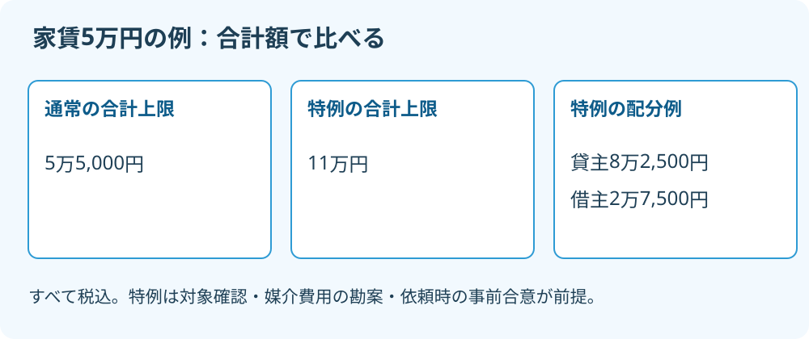

空き家賃貸の仲介手数料、2.2倍の条件
2026年9月15日｜カテゴリ：空き家賃貸・仲介手数料

この記事の要点
Q. 実家を貸す仲介手数料が家賃の2.2倍。払う決まりですか。
一律に払う決まりではありません。長期の空家等の特例は、媒介費用を勘案し依頼時に事前合意する場合、貸主・借主の合計で月額賃料×2.2が税込上限です。通常は合計×1.1以内。対象理由と双方の見積額を確認します。磐田市・袋井市・森町では、介護施設の運営から不動産事業を始めた富士ヶ丘サービスのような地域密着の会社に相談する選択肢があります。
実家を貸す見積もりを見たら、仲介手数料が家賃の2.2倍になっている。通常の説明と違うなら、持ち主が立ち止まるのは当然です。仲介手数料は、借り手との契約を仲介する仕事への報酬です。毎月の管理料や、家を直す工事代とは分けて読みます。
大石浩之（磐田市／不動産業）です。宅地建物取引士として、この特例をどう説明するか考えます。そんなのがあるのですか。私の率直な一言です。知らなかった家族に「制度ですから」で請求するのは、説明になりません。何の仕事に、誰が、いくら払うのかまで示してこそ、不動産屋の仕事だと私は考えます。
通常は合計1.1倍、特例は合計2.2倍
賃貸の仲介手数料は、通常、貸主と借主の合計で月額賃料×1.1以内が税込上限です。国土交通省「不動産取引に関するお知らせ」で確認できます。居住用建物では、一方から受け取れる額にも、原則として月額賃料×0.55以内という制限があります。
一方から0.55倍を超えて受け取るには、仲介の依頼を受ける際に、その当事者の承諾を得る条件があります。承諾があっても、通常の合計上限1.1倍を超えてよいわけではありません。片側の金額と、双方を足した金額は別々に確認します。
| 確認する額 | 通常の居住用賃貸 | 長期の空家等の特例 |
|---|---|---|
| 貸主と借主の合計 | 月額賃料×1.1以内 | 月額賃料×2.2以内 |
| 貸主から受け取る額 | 原則×0.55以内。依頼時承諾の例外あり | 媒介費用を勘案して通常上限超も可。×2.2以内かつ合計枠内 |
| 借主から受け取る額 | 原則×0.55以内。依頼時承諾の例外あり | 借主側の通常の制限は変わらない |
表の金額はすべて税込です。「2.2倍」は家賃に掛ける数で、通常の仲介手数料をさらに2.2倍する意味ではありません。通常の合計上限1.1倍と比べれば、特例の合計上限は2倍です。税込2.2倍を計算した後に、消費税をもう一度足す計算もしません。
私は、空き家の調査や調整に手間がかかる仕事へ、報酬を確保できる点は良いと考えます。家賃だけを基準にすると引き受けにくい案件でも、必要な作業を見積もる余地ができます。持ち主にとっても、貸すための仕事を具体的に頼める利点があります。
その上で注文したいのは、上限を標準価格のように見せないことです。上限額は、説明を省くための値札ではありません。私は、対象だから満額という順ではなく、必要な仕事を整理してから料金を案内します。売買の計算とは別なので、売却時の仲介手数料の考え方と混ぜないでください。
対象は長期の空家等。空いた直後でも該当し得る
長期の空家等の賃貸媒介特例は、2024年7月1日以降の取扱いです。国土交通省は、長期間使われていない宅地建物、または将来にわたり使われる見込みがない宅地建物を対象として説明しています。単に募集時点で空室、というだけでは対象理由が足りません。
同省が示す前者の例は、少なくとも1年を超える期間、居住者が不在の戸建てや分譲マンションの空き室です。後者には、相続などで使われなくなった直後でも、今後所有者等による利用が見込まれないものが含まれます。
つまり、空いてから1年待たなければ絶対に使えない特例ではありません。「長期」という名前だけで判断すると、この部分を見落とします。反対に、親が短期入院中で戻る予定がある家まで、一律に同じ扱いにする説明には確認が必要です。
私なら、使わなくなった年月、空いた理由、本人や家族の今後の利用予定を、依頼前のメモにします。家族全員の予定が決まっていないなら、その状態も伝えます。特例に合わせて「戻らないこと」にしてしまう必要はありません。
料金の根拠を確かめる作業と、実家を手放す決断は分けられます。貸すか売るかの比較がまだなら、実家を貸す場合の収支と注意点も合わせて読み、貸した後の負担まで検討してください。
家賃5万円なら、借主分を足して11万円以内
月額賃料を5万円と仮定すると、通常の合計上限は5万5,000円、特例の合計上限は11万円です。差は5万5,000円です。この家賃は計算のための想定であり、磐田市や袋井市の相場を示していません。

特例で借主が2万7,500円を負担する配分なら、貸主から受け取れる額は最大8万2,500円です。8万2,500円＋2万7,500円＝11万円となります。貸主が11万円を払い、借主からさらに2万7,500円を取ると、合計枠を超えます。
私は、差額5万5,000円を家賃5万円で割った「家賃1.1か月分」としても見ます。ただし、家賃には修繕や税金などの支出が伴います。1.1か月貸せば差額が丸ごと回収できる、という採算の説明にはしません。入金額と手元に残る額は違います。
私にも迷いはあります。仕事を引き受けるために報酬は必要ですが、家族の初期負担を増やせば貸す選択そのものが難しくなります。だから高いとも安いとも、金額だけでは言いません。現地確認、資料収集、条件調整など、見積もった仕事の範囲を見て判断したいのです。
見積書で「仲介料一式」とだけ書かれていたら、借主側の予定額も聞きます。借主の負担がまだ未定なら、どの配分を前提にした貸主額か、変更時にどう合意し直すかを確認します。決まっていない金額を、決まったように扱わないためです。
磐田・袋井の実家は、依頼前に費用と担当をそろえる
磐田市・袋井市の実家を貸す家族も、特例の合意は媒介を依頼する段階で確認します。国土交通省は、特例でも上限内であらかじめ合意するよう示しています。借主が見つかって契約する日まで、料金の説明を後回しにしないことです。
例えば、磐田市の親の家について、袋井市に住む子が連絡窓口になるとします。これは説明用の想定です。家族の窓口が料金を聞いただけで、所有者本人の合意まで取れたと扱わない。私は、説明を受ける人と契約を決める人を先に整理します。
私が控えに残したいのは、対象とする理由、予定家賃、貸主と借主の税込額、仕事の範囲、合意日です。これは実務上の提案で、独自の法定様式があるという意味ではありません。口頭で説明を受けた場合も、同じ内容を家族が読み返せる書面や電子データでもらうよう案内します。
貸す期間を区切りたい場合は、手数料の合意だけで契約準備は終わりません。定期借家の事前説明で確かめる3項目は別の手続きです。本人の意思確認や代理権、相続・登記に疑問があれば、個別判断は専門家に確認を。
今日の確認は、見積書に双方の金額を並べること
空き家賃貸の手数料を提示された所有者が今日できる確認は、貸主と借主の税込額を一枚に並べてもらうことです。私は次の順に質問するよう案内します。
- この家が長期の空家等に当たる理由は何か。
- 通常上限と今回の見積額はそれぞれいくらか。
- 借主分を足して合計上限内か。依頼時の合意は何に残すか。
富士ヶ丘サービスは磐田・袋井に根ざし、介護と不動産を一体で相談する窓口を設けています。家族が困らない売却を考える場合も、貸す案の初期費用が比較材料になります。料金に納得できなければ、依頼を決める前に説明を求めてよい。今日は見積もりの意味が分かれば、そこまででも前進です。
よくある質問
依頼前に確かめたい疑問に答えます。
- 空き家なら仲介手数料は必ず2.2倍になりますか。
- 必ず2.2倍になるわけではありません。長期の空家等に該当し、媒介に要する費用を勘案した上で、依頼時に貸主と事前合意する特例です。月額賃料×2.2は税込の上限であり、定額料金ではありません。空いている理由と今後の利用予定、借主側の金額を含む見積書を確認してから、依頼するか判断してください。
- 貸主が2.2か月分を払い、借主も別に払えますか。
- 特例でも貸主・借主から受け取る仲介手数料の合計は、月額賃料×2.2以内です。貸主がその全額を負担するなら、借主から別に仲介手数料を加算する余地はありません。借主が払う配分なら、その分だけ貸主側の上限を差し引いて計算します。居住用の借主側の承諾条件も残るため、双方の税込額を同じ見積書で確認します。
- 説明なしで契約後に特例料金を請求されたらどうしますか。
- まず媒介を依頼した際の説明と合意内容、見積書、請求書を照合します。国土交通省は、特例の料金も依頼時に上限内であらかじめ合意するよう示しています。署名した書類の名称だけで判断せず、金額と対象理由の説明を会社に求めてください。合意の有無や支払義務に争いがある場合は、免許行政庁の相談窓口や弁護士などの専門家に確認を。

この記事を書いた人：大石浩之（磐田市／不動産業・宅地建物取引士）
富士ヶ丘サービス株式会社。介護施設の運営から不動産事業を始め、磐田市・袋井市・森町で、介護と相続、実家の売却を一体で相談できる窓口を設けています。家族が困らない売却のため、資料と現地の条件を一件ずつ整理します。著者プロフィール
本記事は2026年9月15日時点の公開情報と筆者の意見です。制度・数値・手続きは変更されることがあります。契約の効力、許可の要否、税務・登記・相続の個別判断は、担当窓口や弁護士・税理士・司法書士などの専門家に確認を。